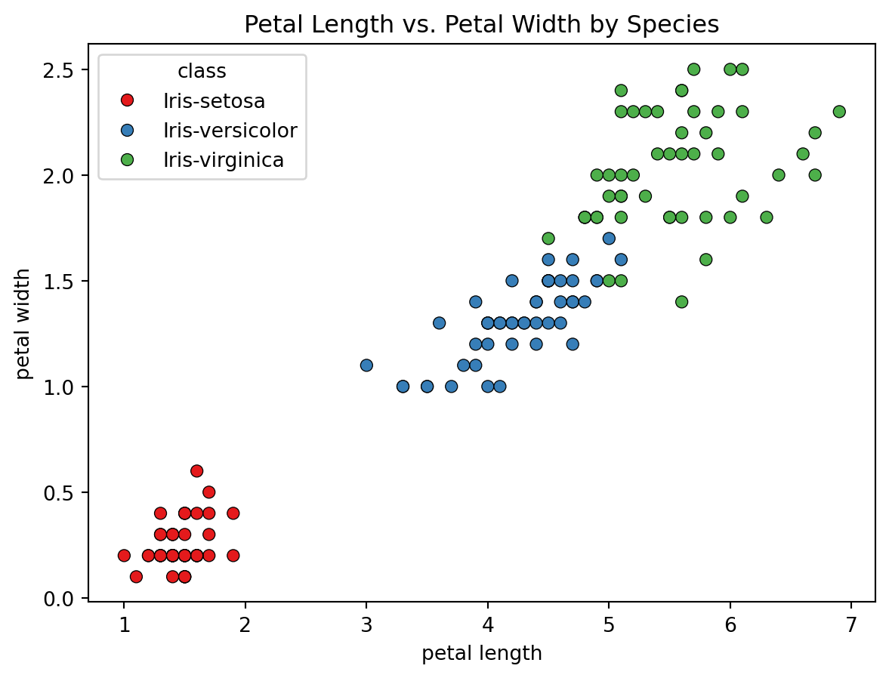

The above image shows the three species of iris there iris_setosa,iris_versicolor and iris_virginica
Iris Dataset
Here, Dataset shows the class and features Class:-iris_setosa,iris_versicolor,iris_verginica Features:-Sepal_length,Sepal_width,petal_length,petal_width
Code
import pandas as pdimport matplotlib.pyplot as pltimport seaborn as snsimport nbformat# Read the .dat filedata = pd.read_csv('iris.data', delimiter=',')data.to_excel('iris.xlsx', index=False)print(data)num_df = data.select_dtypes(include ='number')
# Set up the FacetGrid for Sepal Lengthg = sns.FacetGrid(data, col="class", margin_titles=True, col_wrap=3)g.map(plt.hist, "sepal length", bins=10, color="steelblue", edgecolor="black")g.fig.suptitle("Histogram of Sepal Length by Species", y=1.05)plt.show()
The above plot shows the distribution of sepal lengths for each species of the Iris flower (setosa, versicolor, and virginica). Each subplot represents a different species, allowing for an easy comparison of sepal length distributions between the species. Iris-setosa:- The sepal lengths are mostly concentrated between 4.5 and 5.5 cm. The distribution appears to be more tightly clustered compared to the other species. Iris-versicolor:- The sepal lengths are more spread out, typically ranging from 5.0 to 7.0 cm, with a peak around 5.5 to 6.0 cm. Iris-virginica:- The sepal lengths show a broader distribution, generally ranging from 6.0 to 7.5 cm. This species has the longest sepals on average.
Plot for Sepal Width
Code
# Set up the FacetGrid for Sepal Widthg = sns.FacetGrid(data, col="class", margin_titles=True, col_wrap=3)g.map(plt.hist, "sepal width", bins=10, color="steelblue", edgecolor="black")g.fig.suptitle("Histogram of Sepal Width by Species", y=1.05)plt.show()
The above plot shows the distribution of sepal width for each iris class. Each subplot represents a different species, allowing comparison of sepal width distribution. Iris-setosa:- The sepal width are mostly between 3.0 and 4.0 cm. This iris_setosa tends to have wider sepals compared to the other two. Iris-versicolor:- The sepal width are distributed between 2.5 and 3.5 cm, with a peak around 2.8 to 3.0 cm. Iris-virginica:- The sepal widths range from 2.5 to 3.5 cm, with a slight peak around 3.0 cm, similar to Iris-versicolor.
Plot for Petal Length
Code
# Set up the FacetGrid for Petal Lengthg = sns.FacetGrid(data, col="class", margin_titles=True, col_wrap=3)g.map(plt.hist, "petal length", bins=10, color="steelblue", edgecolor="black")g.fig.suptitle("Histogram of Petal Length by Species", y=1.05)plt.show()
The above plot shows the distribution of petal lengths for each species of the Iris flower.
Iris-setosa:- The petal lengths are mostly concentrated between 1.0 and 1.5 cm, indicating shorter petals for this species. Iris-versicolor:- The petal lengths are more spread out, typically ranging from 3.0 to 5.0 cm, with a peak around 4.0 to 4.5 cm. Iris-virginica:- The petal lengths show a broader distribution, generally ranging from 4.5 to 6.5 cm. This species has the longest petals on average.
Plot for Petal width
Code
# Set up the FacetGrid for Petal Widthg = sns.FacetGrid(data, col="class", margin_titles=True, col_wrap=3)g.map(plt.hist, "petal width", bins=10, color="steelblue", edgecolor="black")g.fig.suptitle("Histogram of Petal Width by Species", y=1.05)plt.show()
The above plot shows the distribution of petal widths for each species of the Iris flower.
Iris-setosa:- The petal widths are mostly concentrated between 0.1 and 0.3 cm, indicating narrower petals for this species. Iris-versicolor:- The petal widths are more spread out, typically ranging from 1.0 to 1.5 cm, with a peak around 1.3 cm. Iris-virginica:- The petal widths show a broader distribution, generally ranging from 1.5 to 2.5 cm. This species has the widest petals on average
Scatter Plot
Here we can see the scatter plots to visualize the relationships between the features in the Iris dataset, with each species represented by a different color. We’ll create scatter plots for the following pairs of features:
Code
# Scatter plot for Sepal Length vs. Sepal Widthsns.scatterplot(data, x="sepal length", y="sepal width", hue="class", palette="Set1", edgecolor="black")plt.title("Sepal Length vs. Sepal Width by Species")plt.show()
The above scatter plot shows the relationship between sepal length and sepal width for the three Iris species.
Iris-setosa:- Data points for this species are well-separated from the others, forming a distinct cluster with shorter sepal lengths and wider sepal widths. Iris-versicolor:- Data points are more spread out, overlapping slightly with Iris-virginica but generally forming a cluster with moderate sepal lengths and widths. Iris-virginica:- Data points are also spread out but tend to have longer sepal lengths and narrower sepal widths compared to Iris-setosa.
Code
# Scatter plot for Petal Length vs. Petal Widthsns.scatterplot(data, x="petal length", y="petal width", hue="class", palette="Set1", edgecolor="black")plt.title("Petal Length vs. Petal Width by Species")plt.show()

The above scatter plot shows the relationship between petal length and petal width for the three Iris species.
Iris-setosa:- Data points form a distinct cluster with shorter and narrower petals. Iris-versicolor:- Data points form a cluster with moderate petal lengths and widths, overlapping slightly with Iris-virginica. Iris-virginica:- Data points form a cluster with longer and wider petals, distinctly separate from Iris-setosa.
Code
# Scatter plot for Sepal Length vs. Petal Lengthsns.scatterplot(data, x="sepal length", y="petal length", hue="class", palette="Set1", edgecolor="black")plt.title("Sepal Length vs. Petal Length by Species")plt.show()
This scatter plot shows the relationship between sepal length and petal length for the three Iris species.
Iris-setosa:- Data points form a cluster with shorter sepal and petal lengths. Iris-versicolor:- Data points form a cluster with moderate sepal and petal lengths, overlapping slightly with Iris-virginica. Iris-virginica:- Data points form a cluster with longer sepal and petal lengths, distinctly separate from Iris-setosa.
Code
# Scatter plot for sepal lengthh vs. petal widthsns.scatterplot(data, x="sepal length", y="petal width", hue="class", palette="Set1", edgecolor="black")plt.title("Sepal Length vs. Petal Length by Species")plt.show()
This scatter plot visualizes the relationship between sepal length and petal width for the three Iris species
Iris-setosa:- Points representing this species form a distinct cluster with shorter sepal lengths and narrower petal widths, clearly separated from the other species. Iris-versicolor:- Points for this species form a cluster with moderate sepal lengths and petal widths, overlapping slightly with Iris-virginica but distinctly separated from Iris-setosa. Iris-virginica:- Points for this species form a cluster with longer sepal lengths and wider petal widths, distinctly separate from Iris-setosa and overlapping with Iris-versicolor.
Code
#```{python}# Scatter plot for sepal width vs. Petal Widthsns.scatterplot(data, x="sepal width", y="petal width", hue="class", palette="Set1", edgecolor="black")plt.title("sepal width vs. Petal Width by Species")plt.show()
This scatter plot shows the relationship between sepal width and petal width for the three Iris species.
Iris-setosa:- Data points form a cluster with wider sepals and narrower petals. Iris-versicolor:- Data points form a cluster with moderate sepal and petal widths, overlapping slightly with Iris-virginica. Iris-virginica:- Data points form a cluster with narrower sepals and wider petals, distinctly separate from Iris-setosa.
Box Plot
Code
# Box plotsns.boxplot(data, x="class", y="sepal width",hue='class', palette="Set3")plt.title("Box Plot of Sepal Width by Species")plt.show()
The box plot provides a clear visual comparison of the sepal widths across the three Iris species: Iris-setosa has the widest range of sepal widths, with the highest median value and the greatest variability. Iris-versicolor has a narrower range of sepal widths with a lower median compared to Iris-setosa. Iris-virginica has a sepal width distribution similar to Iris-versicolor, with moderate variability and a comparable median value.
Code
# Box plotsns.boxplot(data, x="class", y="sepal length",hue='class', palette="Set3")plt.title("Box Plot of Sepal length by Species")plt.show()
A box plot is a standardized way of displaying the distribution of data based on a five-number summary: minimum, first quartile (Q1), median, third quartile (Q3), and maximum. It also highlights outliers, if any. Box Plot Interpretation Iris-setosa:- Median (Q2): The central line inside the box represents the median sepal length. Interquartile Range (IQR): The box represents the range between the first quartile (Q1) and the third quartile (Q3). Whiskers: The lines extending from the box show the range of the data within 1.5 times the IQR from Q1 and Q3. Data points outside this range are considered outliers. Outliers: Points outside the whiskers, if any, represent outliers in the sepal length distribution. Iris-versicolor:- The median sepal length is higher than that of Iris-setosa. The IQR is larger, indicating more variability in sepal lengths. The whiskers and potential outliers provide insight into the spread and extremes of the data. Iris-virginica:- The median sepal length is the highest among the three species. The IQR is comparable to Iris-versicolor but larger than Iris-setosa, indicating substantial variability. The whiskers and any outliers show the spread and extremities of the sepal length for this species. The box plot provides a clear visual comparison of the sepal lengths across the three Iris species: Iris-setosa has the shortest sepal lengths, with minimal variability. Iris-versicolor has moderate sepal lengths with greater variability compared to Iris-setosa. Iris-virginica has the longest sepal lengths with significant variability. This visualization is useful for understanding the distribution and spread of sepal lengths within and across the species, highlighting the central tendency and variability, as well as any potential outliers in the data.
Code
# Box plotsns.boxplot(data, x="class", y="petal width",hue='class', palette="Set3")plt.title("Box Plot of petal Width by Species")plt.show()
The box plot provides a clear visual comparison of the petal widths across the three Iris species: Iris-setosa has the narrowest range of petal widths, with the lowest median value and the least variability. Iris-versicolor has a wider range of petal widths with a higher median compared to Iris-setosa. Iris-virginica has the widest range and the highest median value of petal widths, indicating significant variability within the species.
Code
# Box plotsns.boxplot(data, x="class", y="petal length",hue='class', palette="Set3")plt.title("Box Plot of petal length by Species")plt.show()
The box plot provides a clear visual comparison of the petal lengths across the three Iris species: Iris-setosa has the narrowest range of petal lengths, with the lowest median value and the least variability. Iris-versicolor has a wider range of petal lengths with a higher median compared to Iris-setosa. Iris-virginica has the widest range and the highest median value of petal lengths, indicating significant variability within the species. This visualization is useful for understanding the distribution and spread of petal lengths within and across the species, highlighting the central tendency and variability, as well as any potential outliers in the data.
Code
# Compute the correlation matrixcorrelation_matrix = num_df.corr()# Create a heatmapplt.figure(figsize=(8, 6))sns.heatmap(correlation_matrix, annot=True, cmap="coolwarm", vmin=-1, vmax=1)plt.title("Correlation Matrix of Iris Dataset")plt.show()sns.pairplot(data, hue="class", palette="Set2", markers=["o", "s", "D"])# Set the title for the entire plotplt.suptitle("Scatter Plot Matrix of Iris Dataset", y=1.02)plt.show()